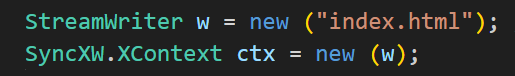
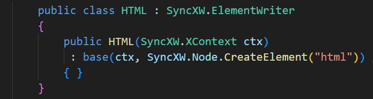
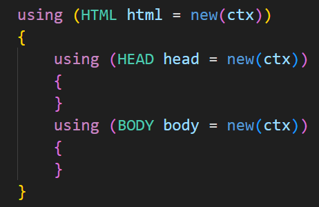
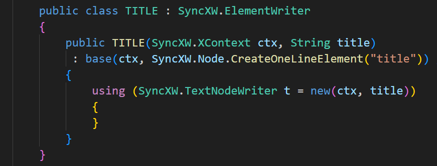
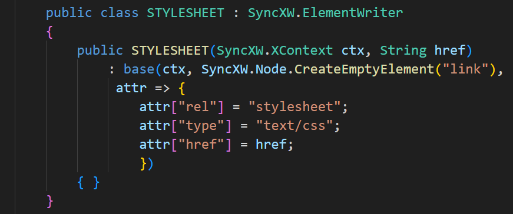
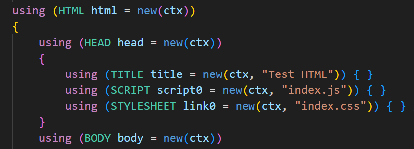
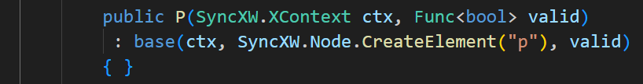
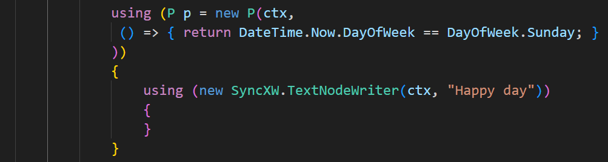
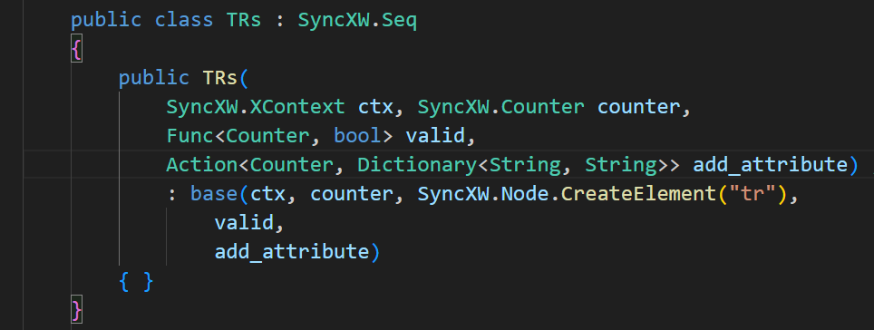
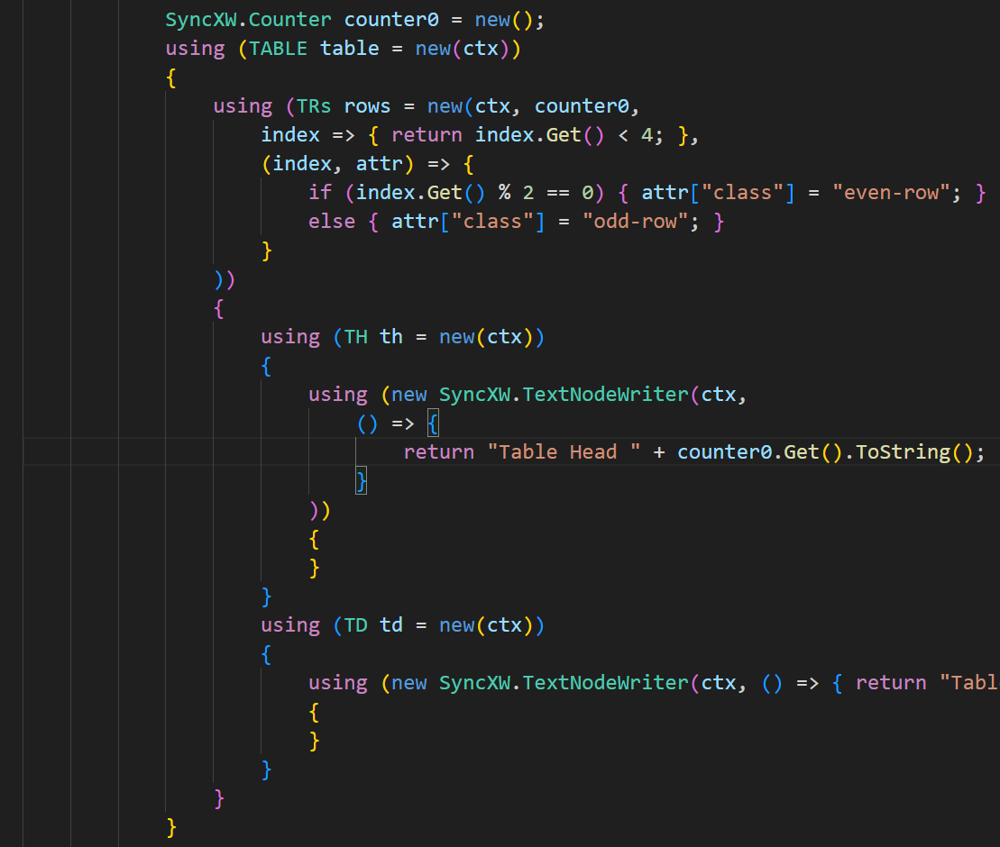

HTML を書き出すチュートリアルです。

ElementWriter クラスのインスタンスを作るのですが、見た目をよくするためにクラスを作りましょう。
必ず発生するということで、ルート要素を作ります。クラス名は HTML です。

ノード指定は普通の要素になる CreateElement を使います。HEAD とか BODY とかも作っておきましょう。
ElementWriterクラスは、コンストラクターで開くタグを、ディスポーザーで閉じるタグを書くので、using でインスタンスを作ります。作られた変数は使われないので、変数名よりクラス名に気を使いましょう。

title 要素です。改行・インデントを入れない、CreateOneLineElement で要素を作ります。

テキストは閉じる必要がないので、コンストラクターの中で単純に作れますが、条件があるときは using が必要なので、常に使うようにしましょう。TextNodeWriter のコンストラクター引数で内容テキストを渡します。
スタイルシートを指定する link 要素は空要素なので、CreateEmptyElement で要素を作ります。Dictionary<String, String> を受け取るラムダ式の中で、属性をセットします。

script も同様に作って（CreateOneLineElement を使います）、head の中に入れましょう。

bool を返すラムダ式を渡すと、書き出すタイミングで呼び出され、最終判断ができます。
日曜日にだけ追加のパラグラフを書き出しましょう。p のクラスにラムダ式を受け取るコンストラクターを作ります。

日曜日かを返しましょう。日曜日でない場合は、using の中にある TextNodeWriter もコンテントを書き出しません。

表の行を縞模様で作ります。コンストラクターでカウンターを受け取ります。書き出すタイミングで呼び出される、カウンターを受け取って bool を返すラムダ式も必要です。スタイル変更は、カウンターと属性の辞書を受け取るラムダ式を使います。

４行まで作ります。index はコンストラクターで渡した counter0 です。書き出すたびに Get が返す値が１つずつ増えます。このカウンターを参照して、終了判定をします。
縞模様にするため、奇数と偶数でスタイル用のクラスを切り替えます。
セル要素の内容は最初に渡したカウンター counter0 を使って作ります。行要素でもラムダ式の引数 index を無視して counter0 を使うこともできます。
